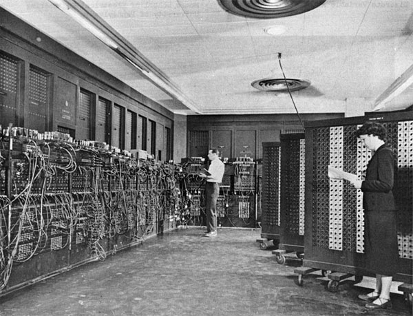

The computer as we know it today had its beginning with a 19th century English mathematics professor name Charles Babbage. He designed the Analytical Engine and it was this design that the basic framework of the computers of today are based on. Generally speaking, computers can be classified into three generations. Each generation lasted for a certain period of time,and each gave us either a new and improved computer or an improvement to the existing computer
The word "computer" was first recorded as being used in 1613 and originally was used to describe a human who performed calculations or computations. The definition of a computer remained the same until the end of the 19th century, when the industrial revolution gave rise to machines whose primary purpose was calculating. In 1822, Charles Babbage conceptualized and began developing the Difference Engine, considered to be the first automatic computing machine. The Difference Engine was capable of computing several sets of numbers and making hard copies of the results. Babbage received some help with development of the Difference Engine from Ada Lovelace, considered by many to be the first computer programmer for her work and notes on the Difference Engine. Unfortunately, because of funding, Babbage was never able to complete a full-scale functional version of this machine. In June 1991, the London Science Museum completed the Difference Engine No 2 for the bicentennial year of Babbage's birth and later completed the printing mechanism in 2000.